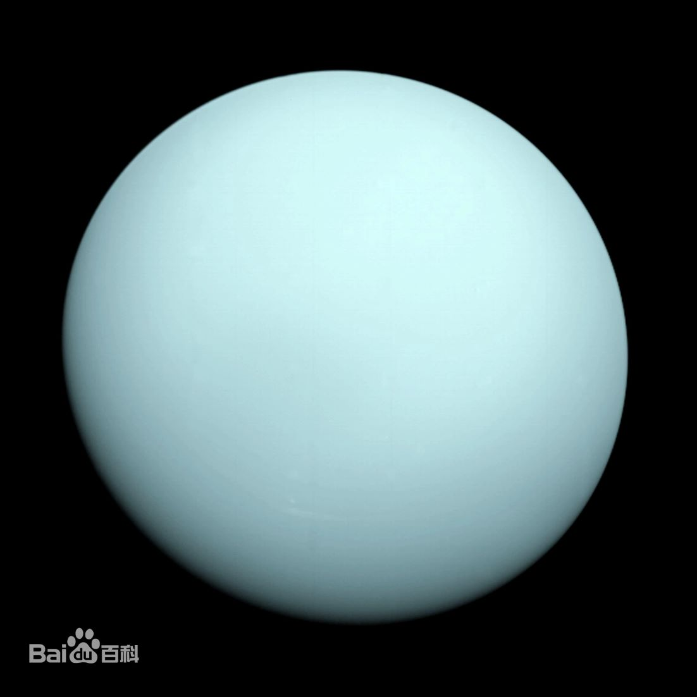

|  | 天王星（英文：Uranus，天文符号：⛢，占星符号：♅），为太阳系八大行星之一，是太阳系由内向外的第七颗行星（18.37~20.08天文单位），是一颗在太阳系中离太阳第七近的青色行星， [17]其体积在太阳系中排名第三（比海王星大），质量排名第四（小于海王星），几乎横躺着围绕太阳公转。封面图为旅行者2号飞掠天王星最近时拍摄的照片。 天王星是第一颗使用望远镜发现的行星。威廉·赫歇尔在1781年3月13日于自宅庭院中发现了这颗行星。天王星和海王星的内部和大气构成和更巨大的气态巨行星（木星、土星）不同，天文学家设立了冰巨星分类来定义它们。天王星拥有27颗已知天然卫星，其中有5颗规模较大，另外还有13条较为暗弱的行星环。 天王星大气的主要成分是氢、氦、甲烷和氘。据推测，其内部可能含有丰富的重元素。地幔由甲烷和氨的冰组成，可能含有水。内核由冰和岩石组成。天王星是太阳系内大气层最冷的行星，最低温度为49K（-224℃）。 |
返回 |